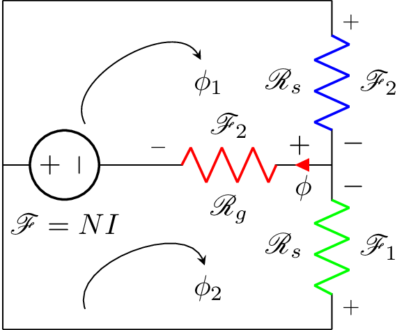

%corresponds to question 4, ELEC 370 assignment 1.
\documentclass{standalone}
\usepackage[american]{circuitikz}
\usepackage{graphicx}
\usepackage{mathrsfs}
\usepackage{latexsym,amssymb,amsmath}
\newcommand{\equal}{=}
\begin{document}
\begin{circuitikz}
\draw (0,2) to [V,l_=$\mathscr{F}\equal NI$] (1.5,2)
(0,0) --(0,4)
(0,0) -- (4,0)
(0,4) -- (4,4)
(4,0) to [R,l^=$\mathscr{R}_{s}$, v_>=$\mathscr{F}_1$, color=green] (4,2)
(4,4) to [R,l_=$\mathscr{R}_{s}$, v^>=$\mathscr{F}_2$, color=blue] (4,2)
(1.5,2) to [R,l_=$\mathscr{R}_{g}$, v^<=$\mathscr{F}_2$,i_<=$\phi$, color=red] (4,2);
\node (phi) at (2.5,3) {$\phi_1$};
\draw[-stealth] (1,2.5) to [bend left=90] (phi);
\node (phi) at (2.5,0.5) {$\phi_2$};
\draw[-stealth] (1,0.25) to [bend left=90] (phi);
\end{circuitikz}
\end{document}Created by David Li